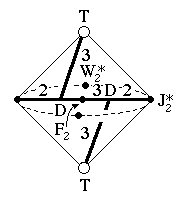
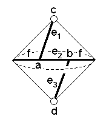

202
202
 204
204 Orbifold Atlas Home Page
Orbifold Atlas Home Page
 Crystallographic Topology Home Page
Crystallographic Topology Home Page
Underlying Topological Space: RP2 double suspension; Figure Pseudo-Symmetry (FPS): 2/m
Euclidean 3-Orbifold with Invariant-Lattice-Complex Letters
(left), Wyckoff Site Letters (right)
 
| FPS | Mult | Lattice Comp | Group Graph | Wyckoff Set | 2[4]Cover |
| 8-2 | D | 332 | a, b | ||
| 16-2 | T | 30 | c, d | ||
| 32-2 | D4[-]T2 | 0<3>32 | (e1:a-c, e3:b-d | ||
| 32-1 | D4[F2]D4 | 32<3>32 | e2:a-b)1 | ||
| 48-1 | D6[J*2]D6 | 33<2>33 | (f:b-a)2 | ||
| 96 | 1 | g:ef | |||
| 96-1 | T6[W*2]T6 | 2*=30<1>30 | g1:c-d | #227(h) | |
| 2 | 96-1 | F23[W*2]& | 2*=33<1>& | (g2:e2-e2)3 | #228(g) |
| 96-1 | J*22[W*2]& | 2*=22<1>& | g3:f-f | #201(g) | |
| m | 96-1 | m* | (g4:ef)4 | #227(g) | |
| Struct-Mult | Critical Points | Heegaard Surf | Wyckoff Cut |
| Diam-1s | D/T/T/D | HP2 320{1} | e2 f |
| NaTl-2 | DD/TF2T/W*2/J*2 | EP2 220{11} | (f1) (f2) |
Lattice Points: (1) [c,a,e2,b,d] = 0,0,0 + (1/8,1/8,1/8) x4; (2) 5/8,1/8,1/8 + (1/4,0,0) x2; (3) 1/4,1/4,1/4 + (0,-1/8,1/8) x2; (4) x,x,z
202
204
Orbifold Atlas Home Page
Crystallographic Topology Home Page
Page last revised: